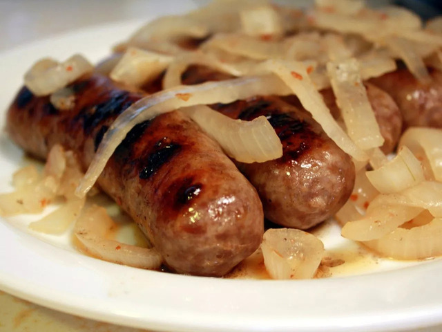

- 4 (12 ounce) cans beer
- 1 large onion, thinly sliced
- 10 bratwurst
- 2 teaspoons red pepper flakes
- 1 teaspoon garlic powder
- 1 teaspoon salt
- ½ teaspoon ground black pepper
- 1. Combine beer and onion slices in a large pot; bring to a boil. Add bratwurst, pepper flakes, garlic powder, salt, and pepper. Reduce heat to medium and cook for 10 to 12 minutes.
- 2. Meanwhile, preheat an outdoor grill for medium-high heat and lightly oil the grate.
- 3. Remove bratwurst to a plate. Reduce heat to low and let onions simmer until needed.
- 4. Cook bratwurst on the preheated grill, turning occasionally to get char marks, until no longer pink in the middle, 5 to 10 minutes. An instant-read thermometer inserted into the center should read at least 160 degrees F (70 degrees C).
- 5. Serve bratwurst with onions.